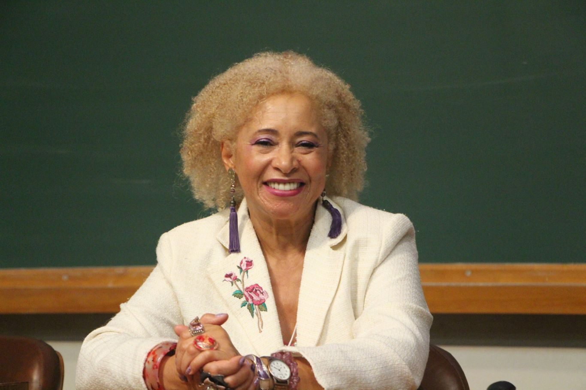

SONIA GUIMARÃES
Professora Associada do ITA, PhD em Materiais Eletrônicos, Mestre em Física.
Departamento de Ciência e Tecnologia Aeroespacial
Ativista na luta contra o racismo e discriminação de gênero. Na causa, é envolvida em comissões e projetos que tratem sobre a inclusão de negros na ciência e na academia. Além de fazer parte de ações de promoção pela presença feminina nesses espaços.
Sobre
Sonia Guimarães (São Paulo, 20 de junho de 1957) é uma física, pesquisadora e professora universitária brasileira.
Guimarães nasceu em São Paulo, capital do Estado, em 1957, filha de pai tapeceiro e uma comerciante, dona de um buffet. Estudante de escola pública, era uma aluna bastante aplicada e uma das melhores da classe, com notas altas, especialmente em matemática. Na adolescência, trabalhava para poder pagar um cursinho e prestar vestibular para engenharia civil. Quando não conseguia pagar integralmente o valor do cursinho, sua mãe ajudava.
Um de seus professores, porém, a orientou a buscar os cursos menos concorridos, o que a levou a escolher a física. Quando já estava cursando Física na Universidade Federal de São Carlos, Guimarães chegou a prestar vestibular para engenharia, mas as aulas sobre materiais sólidos acabaram agradando a estudante, que permaneceu na Física. De 50 alunos em sua sala, apenas cinco eram mulheres. Guimarães foi a primeira pessoa da família a entrar para a faculdade.
Carreira
Graduou-se com licenciatura plena em ciências em 1979 e de 1980 a 1983, fez mestrado em Física Aplicada pela Universidade Federal de São Carlos, com a dissertação Desenvolvimento da Técnica Elipsométrica para Caracterização Ótica de Filmes Finos. Em 1986 especializou-se em Química e Tecnologia dos Materiais e dos Componentes. Em 1986, após um breve período de pesquisa no Istituto LAMEL do CNR em Bologna, na Itália, ingressou no doutorado em materiais eletrônicos pelo Instituto de Ciência e Tecnologia, da Universidade de Manchester, na Inglaterra, trabalhando com microscopia eletrônica de varredura. Especialista na área de semicondutores, Guimarães liderava em 2016 uma pesquisa nacional sobre o desenvolvimento de sensores de calor.
Em 1993, ingressou como docente do Instituto Tecnológico de Aeronáutica (ITA), sendo a primeira negra da instituição, que contava e ainda conta com um reduzido quadro de mulheres docentes. A instituição só passou a aceitar mulheres no vestibular nos anos 1990. Defensora da presença de mulheres na área de Exatas e no próprio ITA, as mulheres ainda são minoria na instituição. Dos 700 alunos que ingressaram no ITA entre 2013 e 2018, apenas 60 eram mulheres.
"É uma instituição conservadora, masculina e branca. Mas aos poucos estamos ganhando espaço. Isso tudo era restrito e anos de exclusão são revertidos aos poucos."
Mantenedora da Faculdade Zumbi dos Palmares, Guimarães trabalha com projetos que envolvem estudantes de áreas carentes e marginalizadas e em projetos feministas, que visem à maior inclusão de mulheres e negros no ambiente acadêmico a fim de reduzir a disparidade racial e de gênero na pesquisa brasileira. Dados do Conselho Nacional de Desenvolvimento Científico e Tecnológico (CNPq) de 2015 apontam que apenas 12 mil mulheres estavam em pesquisa acadêmica nas áreas de tecnologia, engenharia e exata, contra quase 23 mil homens. Dados do mesmo ano apontam que as mulheres negras são apenas 26% das mulheres pesquisadoras do Brasil.
“ Eu sei dos números que eu represento e quero que outras mulheres olhem para mim e vejam que é possível. Eu combato todos os dias um cenário que contrasta de mim só por estar aqui, mas eu quero mais que isso. Precisamos entender que todos os ambientes são nossos e lutar uns pelos outros.”
Em 2017 foi criado dentro do Instituto de Física da Universidade de São Paulo, o Coletivo Negro Sonia Guimarães, que visa ser um ambiente de acolhimento a estudantes negros da instituição.